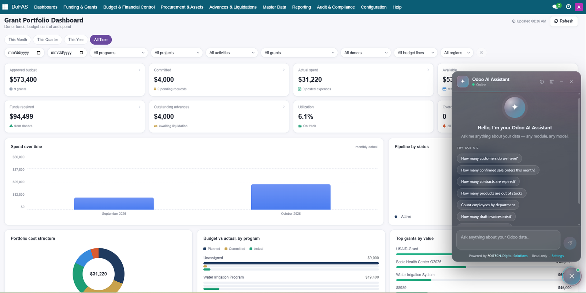
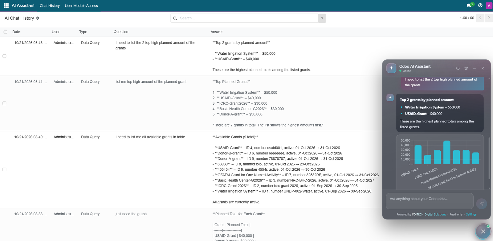
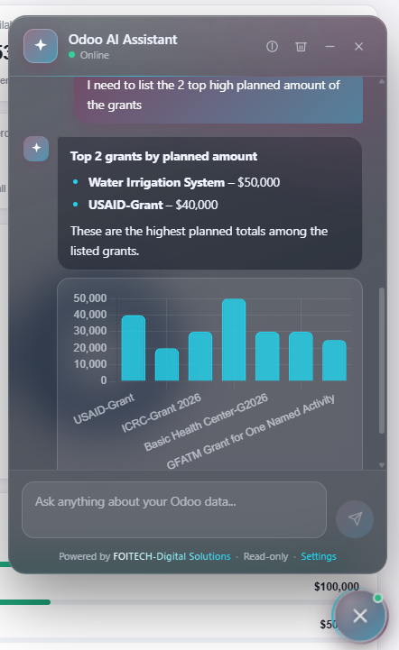
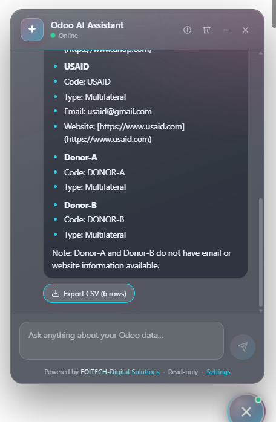

Ask your Odoo data anything.
A floating AI chat inside Odoo that turns plain-language questions into safe, read-only queries, then answers with text, tables, charts and CSV export. Use cloud AI, or run an open-source model on your own machine so your data never leaves your network.
Odoo 17.0Read-only & secureOpenAI · Claude · Gemini · GroqLocal LLM · OllamaLGPL-3

The assistant lives in every screen. One round button opens a translucent glass chat that adopts your Odoo theme colour.
Any module
every installed Odoo app
Zero
data leaves your server with a local LLM
Features
Everything you need to talk to your data
Built on Odoo's own ORM, so answers respect the same access rights your users already have.
💬
Natural-language queries
Ask "How many confirmed sale orders this month?" The assistant plans the query, runs it and explains the result in plain words.
🧩
Works with any module
It discovers the relevant models and fields for each question, so Sales, CRM, HR, Accounting, Inventory and your custom modules all work.
📊
Charts on demand
Bar, line and pie charts are drawn when the result suits a visual. Chart.js is bundled, so charts work even without internet access.
📥
CSV export
Download the records behind an answer as a CSV file that opens directly in Excel or LibreOffice.
📝
Conversation history
Every question and answer is saved per user in an AI Chat History list you can search, filter and review.
🔑
Per-user module access
Decide which modules each user's questions may touch, and mark trusted users as AI super users.
🌐
Five AI options
OpenAI, Anthropic Claude, Google Gemini, Groq, or a local model through Ollama or any OpenAI-compatible server.
🔒
Private by choice
With a local model, questions, schema and results stay on your own hardware. Ideal for finance, government and regulated data.
⚡
Built to be fast
Only the models relevant to a question are sent to the AI, which keeps prompts small and answers quick, even on small local models.
How it works
From question to answer in three steps
The AI never touches your database. It only writes a small JSON plan, and Odoo checks and runs that plan.
1
You ask
Type a question in the chat. Any language your chosen AI model understands will work.
2
Odoo runs a safe query
The plan is limited to search_count, search_read and read_group, executed as you, so access rights and record rules apply.
3
You get the answer
A clear reply with lists or tables, an optional chart, and a CSV download.
Try asking:How many customers do we have?Count employees by departmentList overdue purchase ordersHow many leads are in each CRM stage?Show a chart of planned amount per grant
Screenshots
A closer look
Click any screenshot to open it full size.

Chat history. Every question and answer is stored and searchable.

Access control. Limit each user to the modules they may query.

Local model setup. Point the module at Ollama and click Test connection.

Cloud providers. Pick a provider, paste its API key, save.

Answers with charts. Lists, tables and charts appear right in the chat.

One-click export. The Export CSV button downloads the underlying rows.
Choose your AI
Cloud API or your own machine
Switch providers at any time from Settings. No code changes, and your history is kept.
Local model
Ollama, LM Studio, vLLM. Best for privacy, regulated data and offline use.
Cost: Free (your hardware)
Data leaves your server: No
Needs: A capable PC or GPU server
Groq
Fast, low-cost start.
Cost: Free tier with limits
Data leaves your server: Yes
Needs: API key
OpenAI
High-quality general use.
Cost: Pay per use
Data leaves your server: Yes
Needs: API key and credits
Claude
Careful reasoning, long answers.
Cost: Pay per use
Data leaves your server: Yes
Needs: API key and credits
Gemini
Large free quota for testing.
Cost: Free tier and paid
Data leaves your server: Yes
Needs: API key
Setup guides
Get running in minutes
Follow the installation guide first, then configure one provider. You can add the others later.
1InstallationAll setups
- Copy the
foitech_ai_assistant folder into your Odoo addons path, or install it from the Odoo Apps store. - Make sure the Python
requests library is installed (it is included with most Odoo installs):pip install requests
- Restart Odoo, then go to Apps → Update Apps List, search for AI Assistant for Odoo and click Install.
- Open Settings and scroll to AI Assistant Settings. Choose a provider and fill in its fields (see the guides below), then click Save.
- Click the round button in the bottom-right corner and ask your first question.
Upgrading? Run odoo-bin -u foitech_ai_assistant -d YOUR_DB and hard-refresh the browser (Ctrl+F5) so the new interface files load.
2Run a local model with OllamaPrivate
Run the AI on your own computer or server. Nothing is sent to the internet.
- Install Ollama from ollama.com/download (Windows, macOS or Linux). On Linux:
curl -fsSL https://ollama.com/install.sh | sh
- Download a model. Open a terminal and run, for example:
ollama pull qwen2.5:14b
Rough memory needs (4-bit models, check the model page for exact figures): 7–8B models need about 6 GB of GPU or RAM, 14B about 10–12 GB, 30B-class about 20 GB or more. Models of 14B and above give much more reliable answers than small ones. - Check it works. List your models and test the server:
ollama list
curl http://localhost:11434/api/tags
On Windows PowerShell use curl.exe or Invoke-RestMethod http://localhost:11434/api/tags. - Configure Odoo. In Settings → AI Assistant Settings choose Local model and fill in the fields below.
| Field | Value |
|---|
| Server Type | Ollama (native API) |
| Server URL | http://localhost:11434 (or http://SERVER-IP:11434 if Ollama runs on another machine) |
| Model Name | Exactly as shown by ollama list, for example qwen2.5:14b |
| API Key | Leave empty (only needed behind a reverse proxy that requires one) |
| Context Size | 16384 (use 8192 if memory is tight) |
| Timeout | 180 seconds (use 300 or more on CPU-only machines) |
- Click Test connection. You should see a green message with the response time. Then click Save.
Ollama on a separate server
- On the Ollama machine set the environment variable
OLLAMA_HOST=0.0.0.0:11434 and restart Ollama. - Open port 11434 in the firewall only for your Odoo server's IP address.
- Never expose Ollama to the internet. Ollama has no login of its own, so for shared use put it behind a reverse proxy (nginx, Caddy) with an API key and HTTPS, and enter that key in the API Key field.
LM Studio, vLLM, llama.cpp and other servers
Choose Server Type OpenAI-compatible and enter the server address including /v1, for example http://localhost:1234/v1 (LM Studio) or http://SERVER:8000/v1 (vLLM). In this mode the context size is set on the server itself.
Troubleshooting
| You see | Try |
|---|
| "Could not reach the AI server" | Is Ollama running? Check the URL and firewall. Test with the curl command above from the Odoo server itself. |
| "Model not found" | The name must match ollama list exactly, including the tag after the colon. Run ollama pull for it. |
| Very slow answers | Use a GPU, a smaller model, or a lower context size. The first request is slower because the model loads into memory. |
| "Took too long to answer" | Increase the Timeout. If Odoo runs with workers, also raise limit_time_real in odoo.conf. |
| Wrong or empty answers | Small models struggle with structured output. Try a 14B+ model, and avoid "thinking" model variants for speed. |
3GroqFree tier
- Create an account at console.groq.com.
- Open API Keys, click Create API Key and copy the key (it starts with
gsk_). You will only see it once. - In Odoo Settings → AI Assistant Settings, choose Groq, paste the key and pick a model.
- Click Save.
Groq's free tier has rate limits, and the models available depend on your account. If the selected model is not available to your key, the assistant automatically switches to one that is.
4OpenAI (ChatGPT)API key
- Sign in at platform.openai.com and add billing credits (the API is billed separately from ChatGPT subscriptions).
- Open API keys, create a secret key and copy it (starts with
sk-). - In Odoo choose OpenAI, paste the key, and type a Model id, for example
gpt-5-mini. Any chat model id from OpenAI's models page works. - Click Save.
5Claude (Anthropic)API key
- Sign in at console.anthropic.com and add credits.
- Open API Keys, create a key and copy it (starts with
sk-ant-). - In Odoo choose Claude, paste the key, and enter a Model id, for example
claude-sonnet-5-5. - Click Save.
6Google GeminiAPI key
- Open Google AI Studio and create an API key (starts with
AIza). - In Odoo choose Google Gemini, paste the key, and enter a Model id, for example
gemini-flash-latest. - Click Save.
Model names change often. Providers retire and add models regularly, so the model field for OpenAI, Claude and Gemini is free text. If you see a "model not available" message, copy a current model id from the provider's documentation.
7Control who can ask whatSecurity
Open AI Assistant → User Module Access and click New. Choose the user, pick the Allowed Modules, or switch on AI Super User. The assistant applies these rules:
| User | What the assistant can query |
|---|
| Odoo administrator | Everything |
| AI Super User | Everything |
| No rule defined | Everything the user can already access (open by default) |
| Rule with modules | Only those modules |
| Rule with no modules | Nothing (fully blocked) |
Because users without a rule are unrestricted, create a rule for every user whose access you want to limit.
Security & privacy
Designed to be safe with business data
Strictly read-only
Only search_count, search_read and read_group are allowed. The assistant cannot create, edit or delete records, and plans are parsed as data, never executed as code.
Runs as the logged-in user
Queries use the user's own access rights and record rules, so nobody sees data they could not already open in Odoo.
Clear data flow
With a cloud provider, the AI receives the question, the names and labels of the few relevant models and fields, and up to 50 result rows used to write the answer. With a local model, none of it leaves your network.
Keys and output handled carefully
API keys are stored in Odoo system parameters, visible to administrators only, and Gemini keys are sent in a header rather than in the URL. Answers are HTML-escaped before display.
Requirements
Compatibility
| Item | Details |
|---|
| Odoo version | 17.0, built on standard Odoo and OWL APIs |
| Odoo dependencies | base, web, mail |
| Python library | requests |
| Internet | Only for cloud providers. Local models and charts work offline. |
| License | LGPL-3 |
FAQ
Common questions
Can the assistant change or delete my data?
No. It is limited to read-only queries, and every query runs with the asking user's own permissions.
Is my whole database sent to the AI?
No. Only the models relevant to the question are described to the AI, plus the few result rows needed to phrase the answer. With a local model nothing leaves your server.
Which languages can I ask in?
The assistant follows the language abilities of the model you choose. Large cloud models handle many languages well. Small local models are usually strongest in English, so test with your own language before rolling out.
How much do the AI providers cost?
This module is free under LGPL-3. Groq and Gemini offer free tiers with limits. OpenAI and Claude bill per use. A local model costs only your own hardware.
Does it need a powerful computer for local models?
A GPU makes local models fast. CPU-only machines work but answers can take a minute or more. See the Ollama guide above for memory estimates.
What's new
Release notes
| Version | Changes |
|---|
| 17.0.1.0.4 | Chart.js bundled (charts work offline). Model names for OpenAI, Claude and Gemini are now editable. Support for current OpenAI reasoning models. Gemini API key moved from the URL to a header. Built-in setup guides. |
| 17.0.1.0.3 | Local model support (Ollama and OpenAI-compatible servers) with Test connection. |
| 17.0.1.0.2 | New translucent glass interface, About panel, answer formatting with lists and tables. |
| 17.0.1.0.0 | First release: natural-language queries, charts, CSV export, history and per-user module access. |
Support
Need help or a custom version?
Developed by Faridullah Qaderi, FOITECH-Digital Solutions. Questions, bug reports, training and custom integrations are welcome.
Powered by FOITECH-Digital Solutions · Innovative Solutions for a Smarter Tomorrow